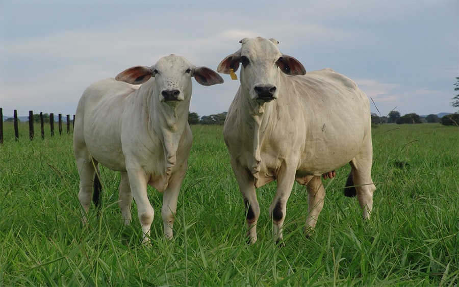

Quienes Somos
MISIÓN
Desde 1946 somos la asociación boliviana representativa del gremio cebuista, que vela por los intereses colectivos de sus asociados y por la productividad ganadera del país, por medio del registro, administración, promoción y fomento del mejoramiento genético de la raza y sus cruces en Colombia y en el exterior.
VISIÓN
Para 2025, Asocebú seguirá siendo líder en la dirección del mejoramiento genético de la ganadería colombiana, con procesos que aseguren la prestación de servicios de calidad, la selección y eficiencia productiva de las razas cebuinas y sus cruces, a través de programas de investigación, promoción, divulgación, buenas prácticas, sostenibilidad ambiental y la apertura de mercados internacionales; orientando el buen uso de las biotecnologías disponibles junto con tecnologías de vanguardia adecuadas a las necesidades del campo, que incentiven a los colombianos a consumir carne y leche e integrarse como familia en torno a la actividad ganadera.
POLÍTICA DE CALIDAD
En Asocebú estamos comprometidos en entregar productos y servicios de excelente calidad, cumpliendo con los requisitos legales, con el fin de satisfacer a nuestros asociados, clientes y partes interesadas.
Para tal fin, se investigan e implementan nuevas normas técnicas en mejoramiento genético de razas cebuinas, garantizando las buenas prácticas agropecuarias en ganadería mediante el trabajo de personal calificado y comprometido, generando mejoramiento continuo de nuestros procesos, en pos de una mayor productividad del sector ganadero e impulsando a los futuros ganaderos del país.
OBJETIVOS DE CALIDAD
1. Incrementar la satisfacción de nuestros asociados, clientes y partes interesadas.
2. Fortalecer el nivel de competencia y satisfacción del personal.
3. Incrementar el nivel de eficacia y eficiencia de los procesos.
